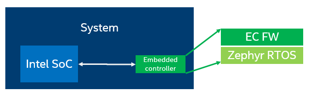
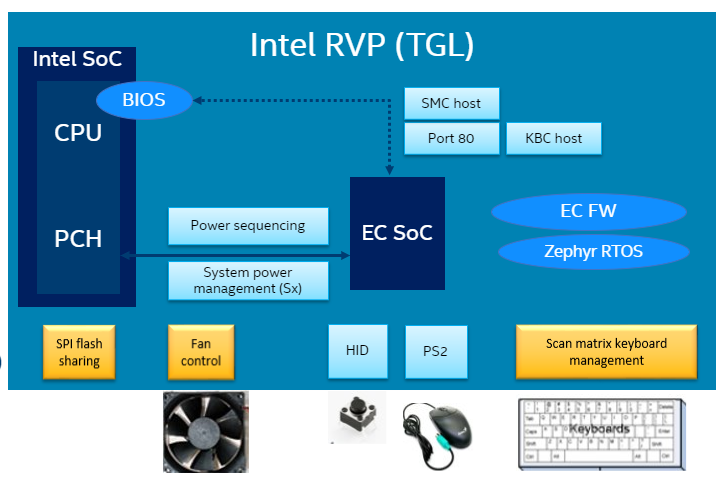
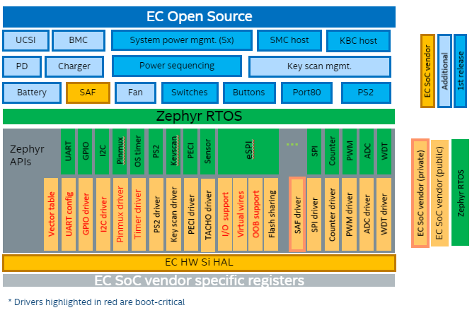

Overview¶
The Embedded Controller firmware (EC) in a system, handles various low-level tasks not performed by the operating system like board power sequencing, battery management, thermal management, keyboard management, LAN, PCIe reset etc.
Intel Basic Embedded Controller firmware provides reference code with a subset of such capabilities.
IA system designers, OEMs can leverage the Intel open source EC FW code to use as a base and customize for the system requirements. The reference code covers all the basic EC functionality required to boot Enhanced Serial Peripheral Interface (eSPI) enabled platforms.”
The reference code will also demonstrate the 3rd party microcontroller role in common platform boot sequence as well as the interaction with Intel BIOS. Finally, it showcases the management of PC peripherals such as PS/2 devices and matrix keyboards.
{kind=link}
Dependencies¶
The reference embedded controller firmware is based on Zephyr RTOS, this repository contains only the application source code as depicted below, so it must be combined with Zephyr RTOS and the respective EC SoC Board Support Package (BSP) and Hardware Abstraction Layer (HAL).
{kind=link}
Repository Management¶
In order to manage the combination of the above repositories and versions, this project uses Zephyr’s west (Zephyr’s meta-tool).
The main repository contains a manifest file (west.yml), that list all the dependencies and revisions required for each of the external projects.
This means the main repo acts as the manifest repository.

You can find additional information about the repository management and west manifest in Zephyr’s west manifest.